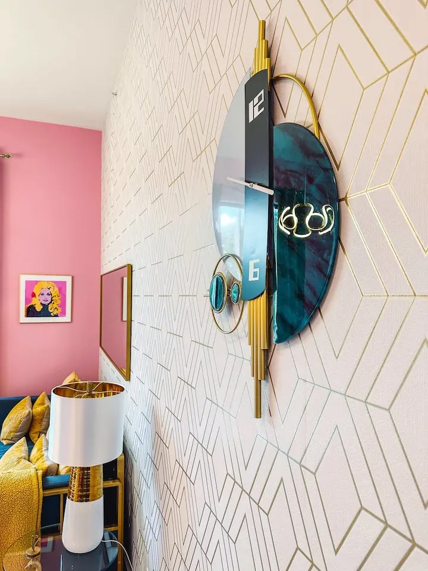
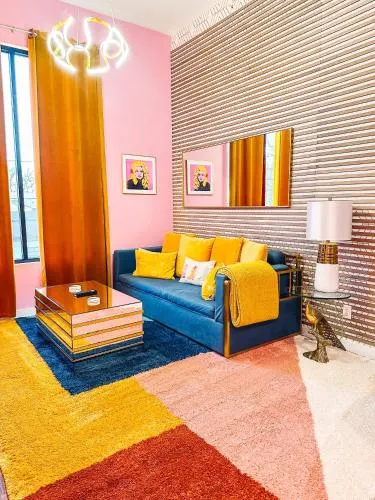
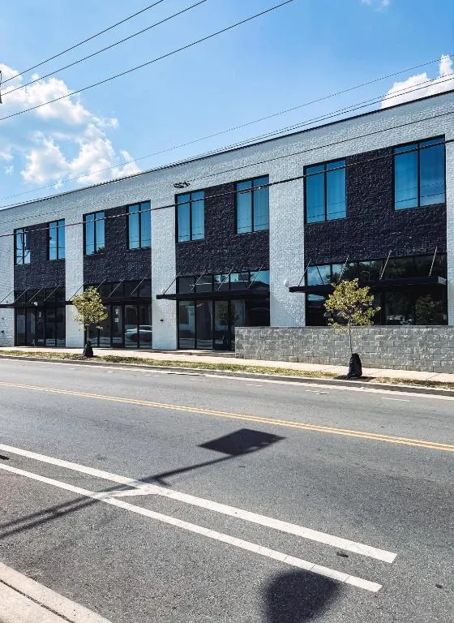
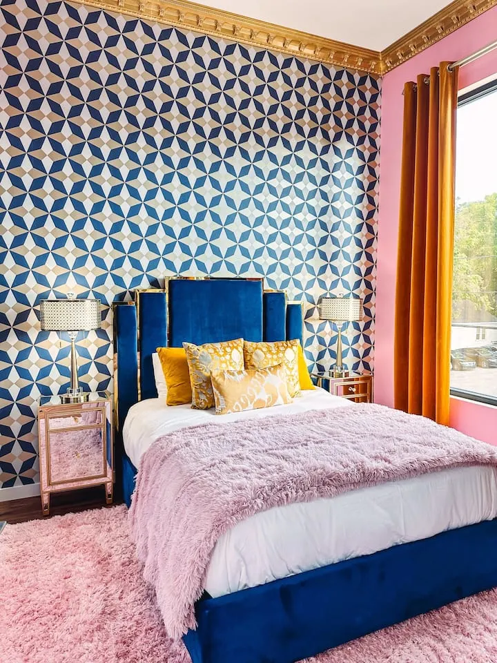
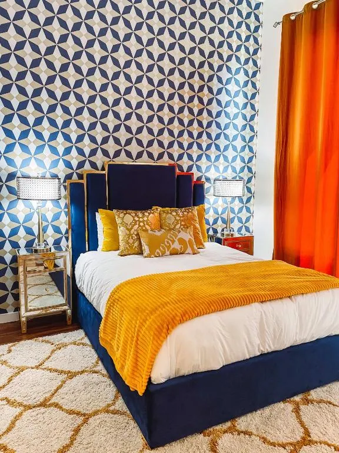
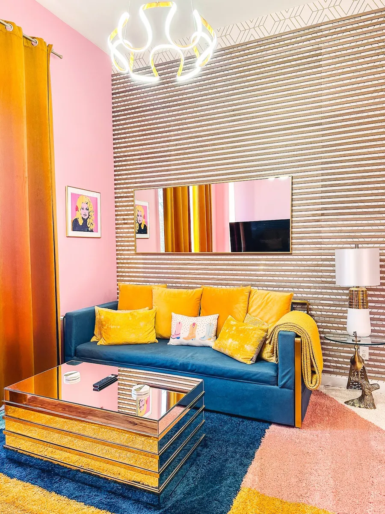
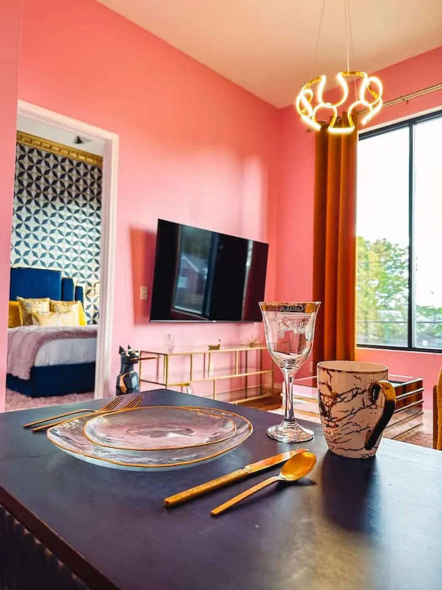
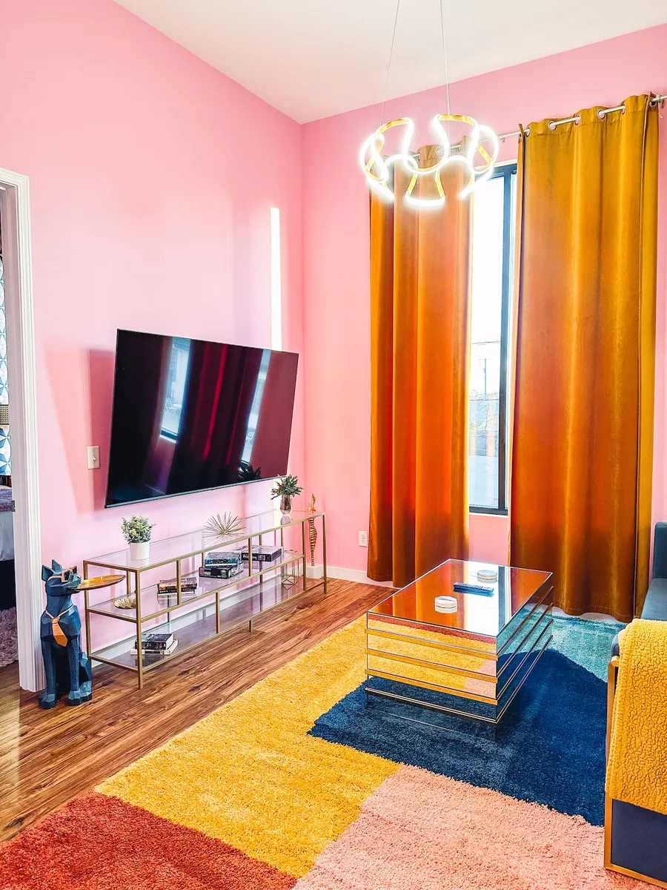

Cook, snack, caffeinate
Fully equipped kitchen with cookware, utensils, dishwasher, microwave, oven, refrigerator, toaster, Keurig, K-Cups, and a Ninja blender.
Nashville, but make it pink
Dolly’s Art Deco is a picture-ready boutique condo tucked between Germantown and the Buchanan Arts District, close to Broadway energy but cozy enough to actually exhale.





The assignment
This is not a beige box pretending to be Nashville. It is a compact, polished little hideout with Dolly drama, Art Deco curves, soft bedding, serious mirror moments, and a living room that knows the pre-dinner group photo is legally mandatory.

Sleep setup
There is a queen bedroom with its own full bathroom, plus a living-room sleeper sofa that transforms into twin bunks. Translation: the place keeps the vibe intact without making anyone negotiate with a sad air mattress at midnight.
What’s covered
The unit is styled for the photos, but stocked for real life: kitchen gear, laundry, Wi-Fi, streaming, climate control, toiletries, and the quiet miracle of included parking.
Fully equipped kitchen with cookware, utensils, dishwasher, microwave, oven, refrigerator, toaster, Keurig, K-Cups, and a Ninja blender.
A big smart TV is ready for streaming, with a dining spot for two when the “just a quick bite” plan becomes dinner.
Washer, dryer, iron, ironing board, hair dryer, essentials, towels, bath, shower, and Public Goods toiletries.
Keyless access, elevator in the building, high-speed Wi-Fi, AC, heat, ceiling fans, and parking in the lot.
Photo behavior
Expect bold pinks, shiny little details, playful styling, and enough backdrop options to make the camera roll quietly beg for mercy.


Where it sits
The neighborhood puts coffee, restaurants, bars, local color, and the bigger Broadway night-out orbit within easy reach. Close enough to go play; tucked away enough to come back and recover with dignity. Allegedly.
Quick scan
Verdict
Bring outfits, chargers, and the person who always says “one more photo.” The apartment can take it.